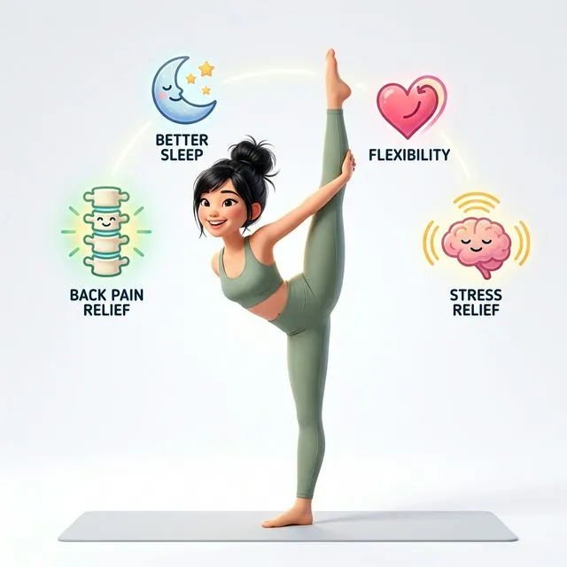
Mỗi người đến với yoga vì một lý do khác nhau. Có người muốn giảm đau lưng, có người cần ngủ ngon hơn, còn có người muốn giải tỏa stress sau một ngày dài. Bài viết này giúp bạn chọn đúng tư thế và chuỗi bài tập phù hợp với mục tiêu của mình.
🦴 Yoga giảm đau lưng
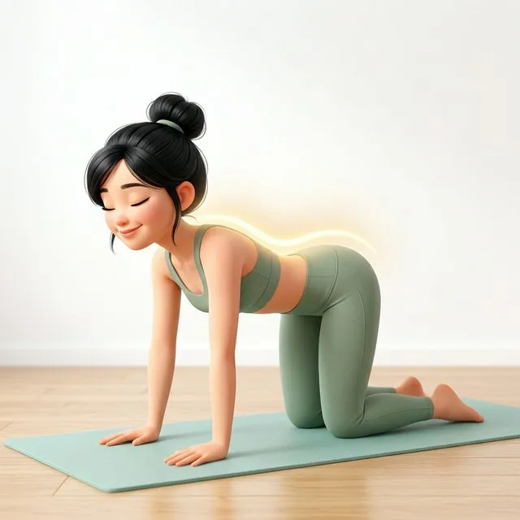
Đau lưng là vấn đề phổ biến nhất ở dân văn phòng. Những tư thế sau giúp kéo giãn cột sống, giải phóng các đĩa đệm bị chèn ép, và tăng cường sức mạnh cơ lưng.
Thực hiện theo thứ tự, mỗi tư thế giữ 5–8 nhịp thở.
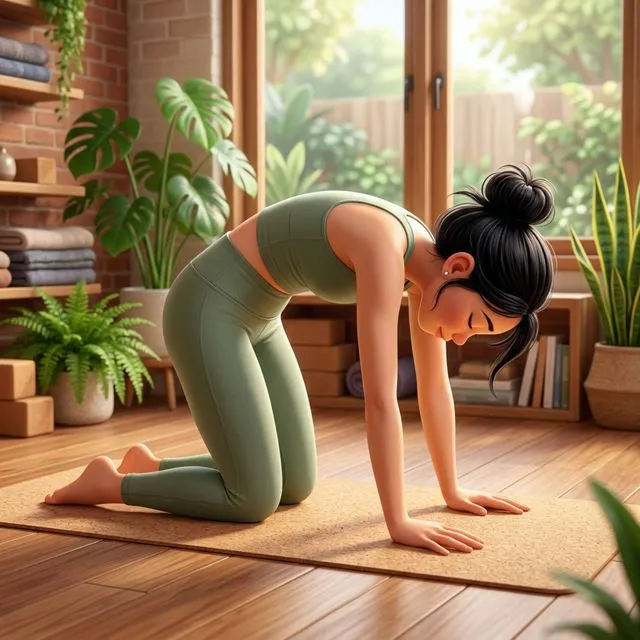
Làm mềm cột sống, khởi động nhẹ nhàng.
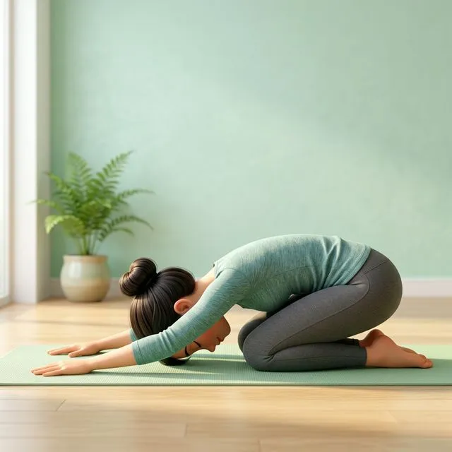
Kéo giãn lưng dưới.
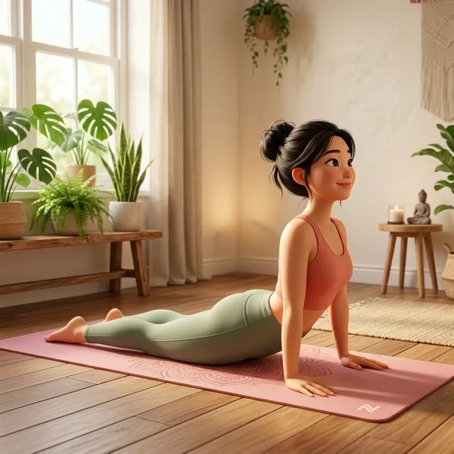
Tăng cường cơ lưng, mở ngực.
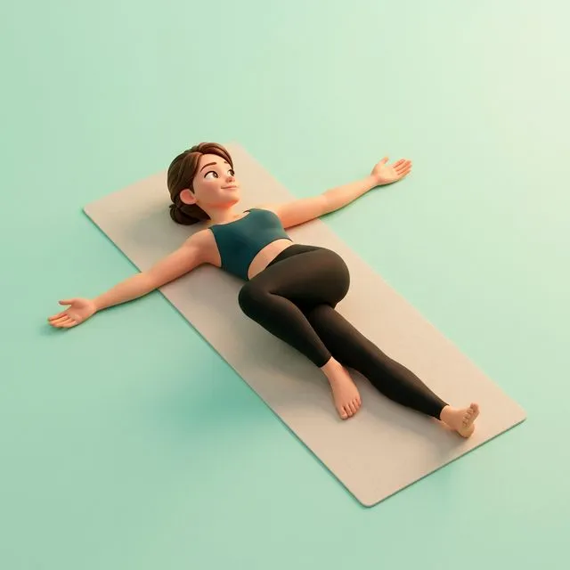
Giải phóng áp lực đĩa đệm.
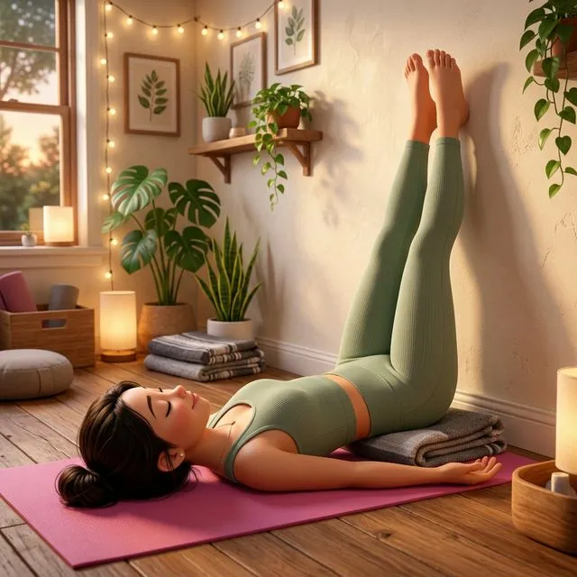
Thư giãn lưng dưới hoàn toàn.
Nếu bạn đang bị thoát vị đĩa đệm hoặc đau lưng cấp tính, hãy tham khảo ý kiến bác sĩ trước khi tập. Tránh các tư thế gập sâu về phía trước khi lưng đang đau nhói.
🧠 Yoga giảm stress & lo âu
Stress kéo dài gây ra căng cơ, mất ngủ, và suy giảm sức khỏe tổng thể. Yoga kết hợp hơi thở sâu + tư thế thư giãn giúp kích hoạt hệ thần kinh đối giao cảm — "chế độ nghỉ ngơi" của cơ thể.
Thực hiện chậm rãi, tập trung vào hơi thở. Có thể bật nhạc nhẹ.
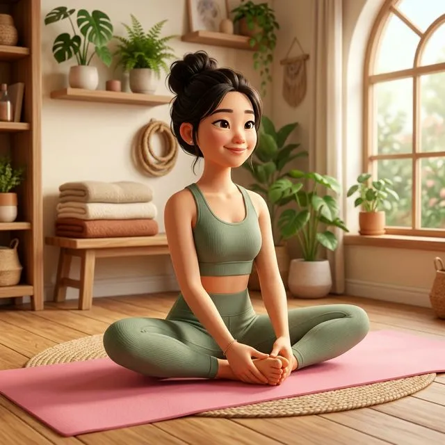
Ngồi yên, hít vào phình bụng, thở ra xẹp bụng.
Hai tay duỗi dài phía trước.
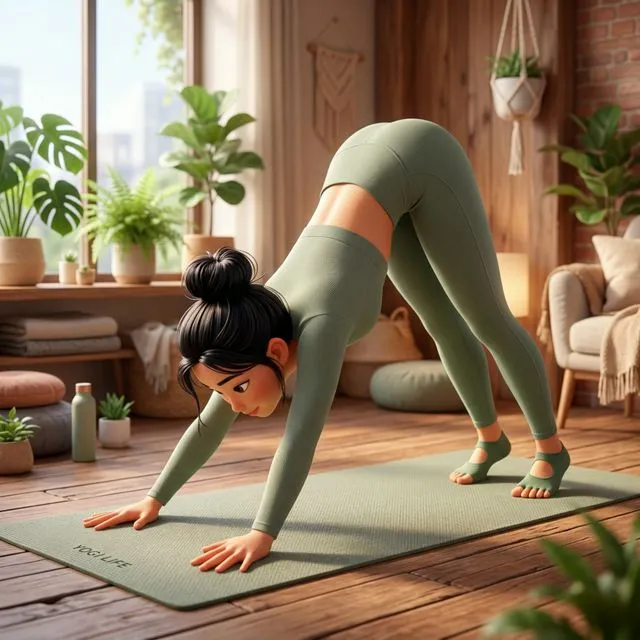
Giải phóng vai gáy.
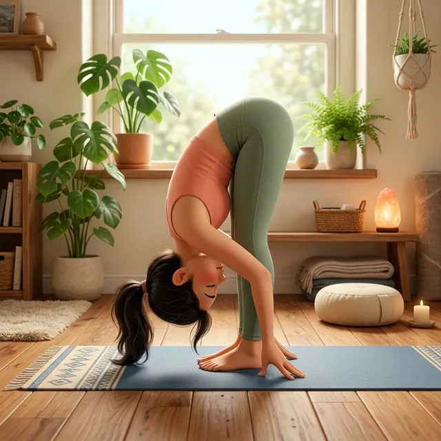
Để đầu buông xuống tự nhiên.
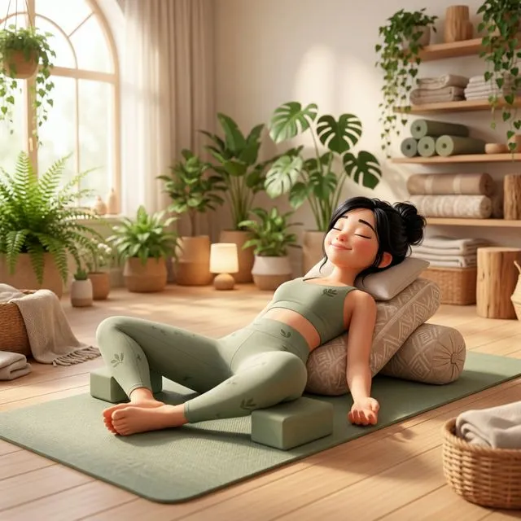
Mở hông, thư giãn sâu.
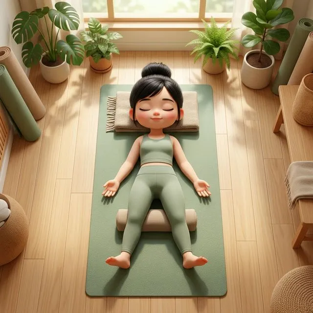
Thả lỏng hoàn toàn.
🌙 Yoga trước khi ngủ
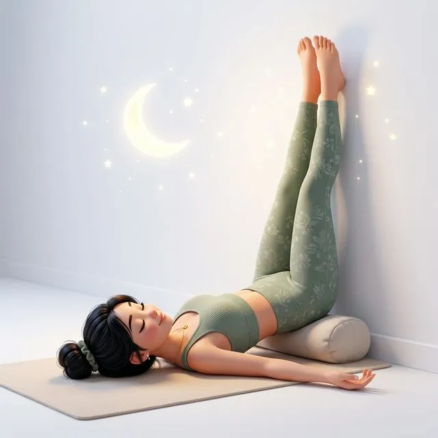
Tập yoga nhẹ trước giờ đi ngủ 30 phút giúp hạ nhịp tim, giảm cortisol, và chuẩn bị cơ thể cho giấc ngủ sâu. Tất cả tư thế trong bài tập này đều thực hiện trên giường được.
Tắt đèn sáng, chỉ dùng đèn ngủ. Thở chậm và sâu.
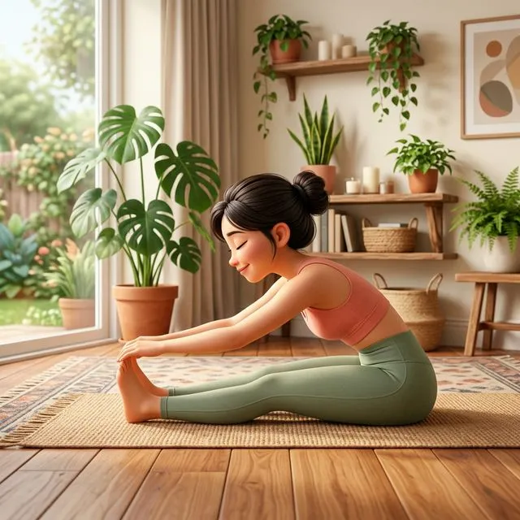
Kéo giãn lưng và chân.
Đặt gối dưới đầu gối nếu cần.
Tư thế phục hồi tuyệt vời.
Thả lỏng hoàn toàn, chìm vào giấc ngủ.
💪 Yoga tăng dẻo dai & linh hoạt
Muốn dẻo hơn không phải ép cơ thể. Chìa khóa là giữ tư thế lâu + thở đều. Cơ sẽ giãn tự nhiên khi bạn thư giãn, không phải khi bạn ép.
Giữ mỗi tư thế tối thiểu 1 phút. Thở đều, không nín thở.
Đạp gót chân dần xuống sàn.
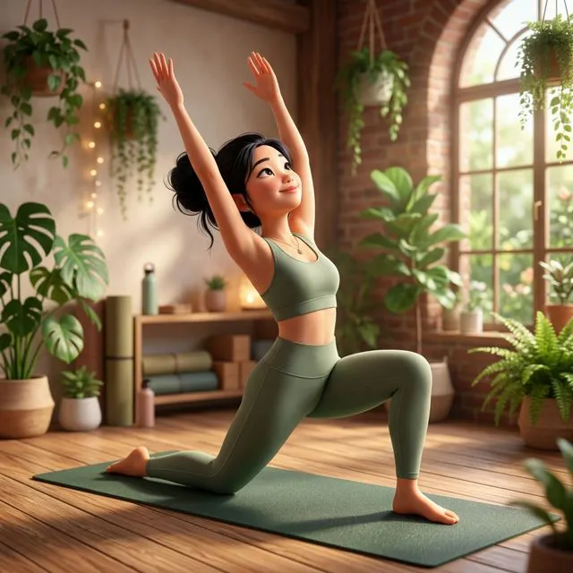
Kéo giãn hông sâu.
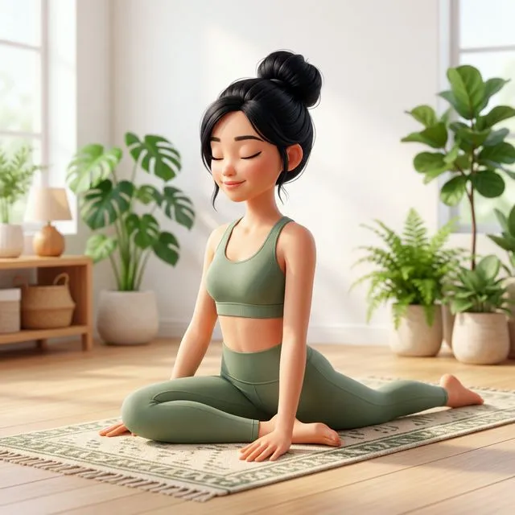
Mở hông hiệu quả nhất.
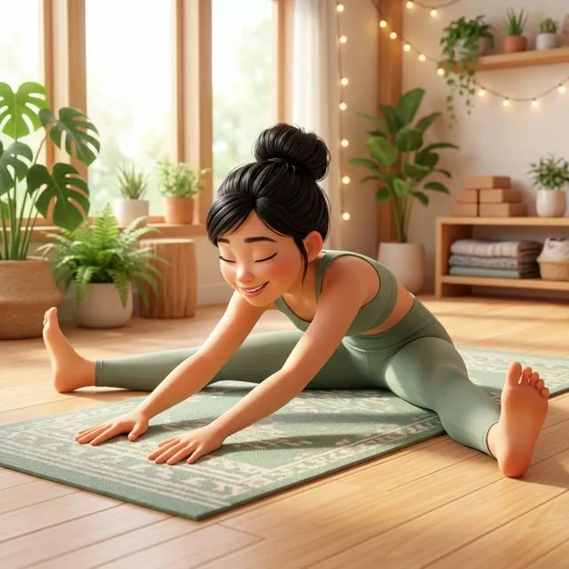
Kéo giãn đùi trong.
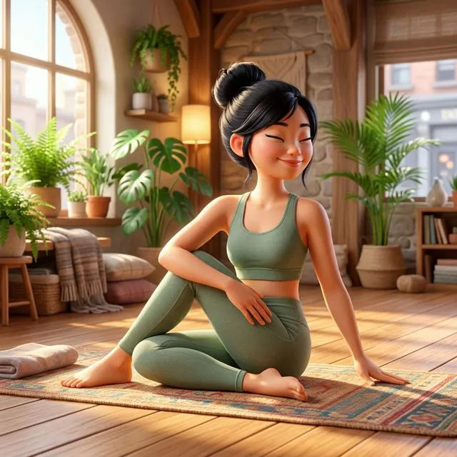
Tăng linh hoạt cột sống.
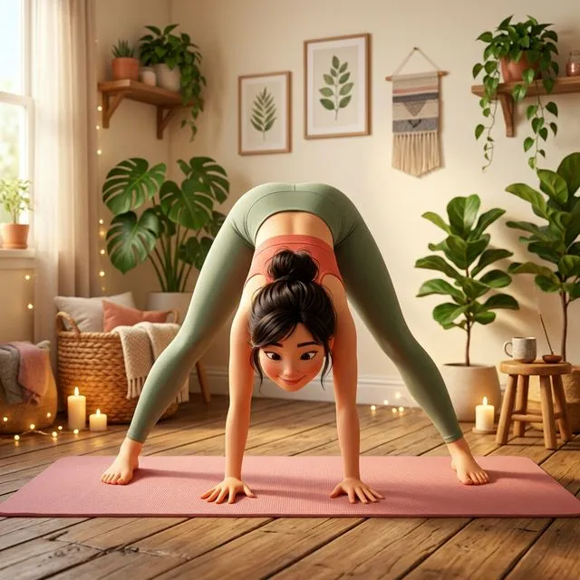
Kéo giãn gân kheo.
Gập người về trước nhẹ nhàng.
📊 Bảng chọn bài tập nhanh
| Mục tiêu | Thời gian | Khi nào tập | Tần suất |
|---|---|---|---|
| 🦴 Giảm đau lưng | 15 phút | Sau giờ làm việc | Hàng ngày |
| 🧠 Giảm stress | 20 phút | Bất kỳ lúc nào | 3–5 lần/tuần |
| 🌙 Ngủ ngon | 10 phút | Trước ngủ 30p | Hàng đêm |
| 💪 Dẻo dai | 25 phút | Buổi sáng/tối | 3–4 lần/tuần |
Bạn có thể kết hợp nhiều mục tiêu trong cùng một buổi tập! Ví dụ: tập giảm stress 20 phút, sau đó kết thúc bằng bài ngủ ngon 10 phút. Tổng cộng 30 phút cho một buổi tối hoàn hảo 🌙